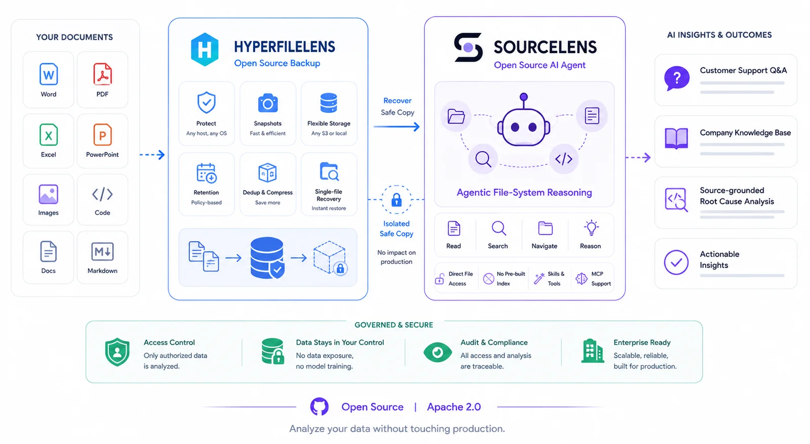

试用 HyperFileLens
试用 HyperFileLens 智能客服问答
直接基于产品文档、PDF、PPT 回答客户问题——多模态识别跨格式读取，不用预先转换格式。
直接对你的文档备份进行问答——PDF、Word、Excel、PPT、图片、Markdown 等任意文本格式，且不影响生产环境。

使用场景
直接基于产品文档、PDF、PPT 回答客户问题——多模态识别跨格式读取，不用预先转换格式。
把分散的技术文档、管理制度、决策记录——不管是研发的还是全公司的——整合成一个团队真正能查询的知识库，而不只是搜索和摘要。
不是关键词匹配，也不是扫日志——agent 会像资深工程师一样真正阅读、推理你的源代码，直到确认真正的根因。
同时，它还是一个靠谱的备份工具
Windows、Linux、Mac——服务器还是工作站都一样——再加上 NAS 共享目录，统一策略保护，不用来回切换三套工具。
对象存储还是本地存储，任意 S3 兼容服务商都可以——你的备份不会被绑死在某一家存储厂商身上。
只想找回一个文件？浏览任意快照，几秒钟恢复这一个文件就够了，不需要整卷恢复。
工作原理
HyperFileLens 把你的文档和代码备份成一份安全、隔离的副本——然后由 SourceLens（我们的开源 Agentic RAG 引擎）直接对这份副本进行推理，全程不碰生产环境。

套餐与定价
比较个人版各套餐的备份存储容量和 AI Token 配额。
无需付款
无需付款
每年支付 $58.10
比月付 12 个月省 $11.62
按月付款
每年支付 $192.30
比月付 12 个月省 $38.46
按月付款
每年支付 $445.70
比月付 12 个月省 $89.14
按月付款
美元计价，含适用税费。AI Token 配额每月重置，未用完不结转。备份存储为总容量，不按月重置。
社区版
在安装了 Docker 的 Ubuntu 主机上安装最新社区版，安装程序会先校验镜像和资产，国内通过 Gitee 和阿里云镜像交付。
社区版免费开源，自带 S3 兼容存储和 AI 模型或 API Key；企业版能力将在后续版本提供。
HyperFileLens 目前处于公测阶段。
在 Ubuntu 主机上运行
# 安装最新社区版
$ curl -fsSL \
https://gitee.com/oneprolabs/hyperfilelens/raw/main/deploy/online/install.sh \
| sudo bash -s -- --mirror cn --yes博客
备份、快照恢复，再用 AI Copilot 对选定快照直接提问——一份上手体验记录。
从传统 RAG 到 Agent，我们用 SourceLens 做了一次真实的企业知识实践。
把本地文件交给 HyperFileLens 备份，再用 AI 分析这批文件的使用体验。
联系我们